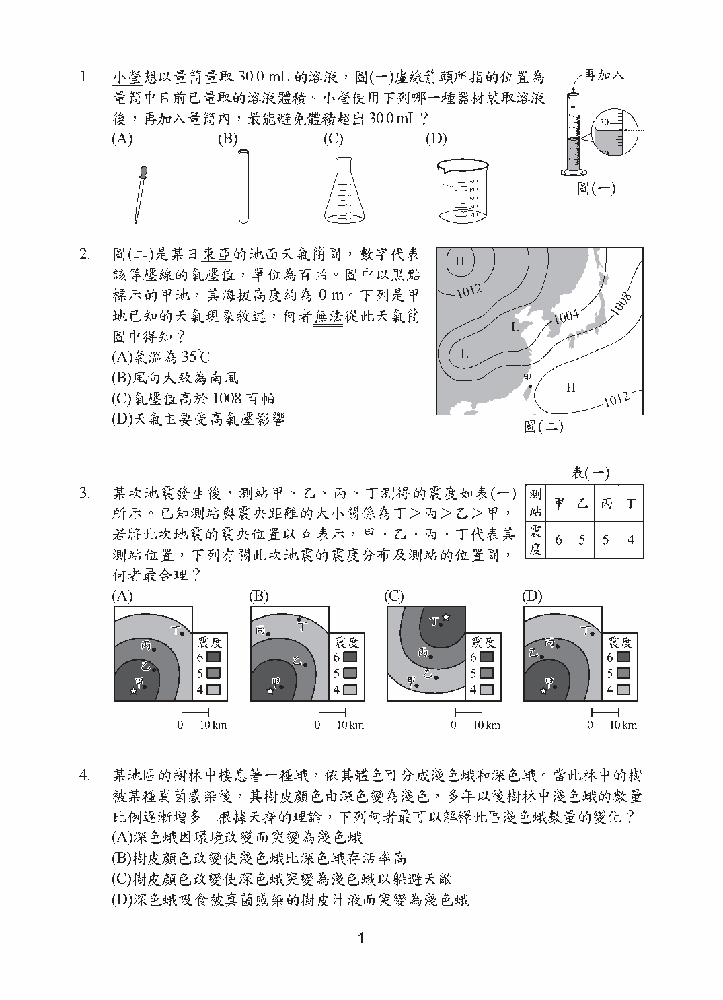
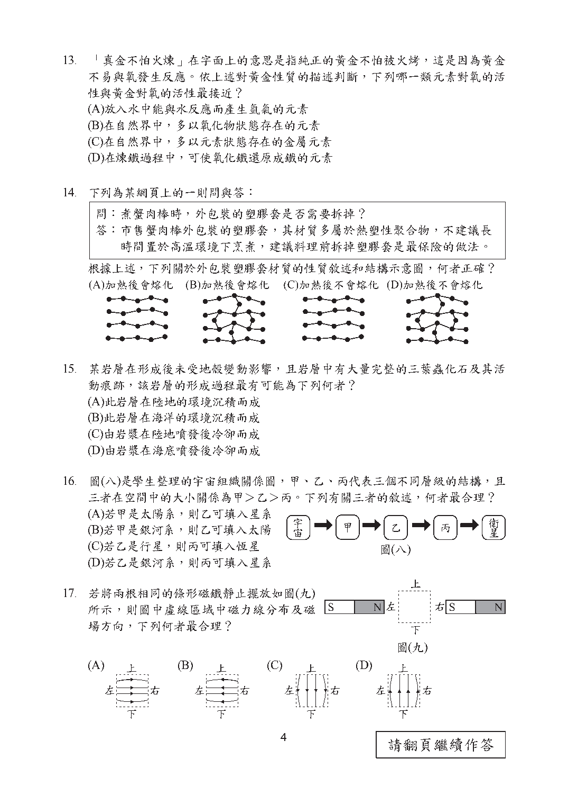
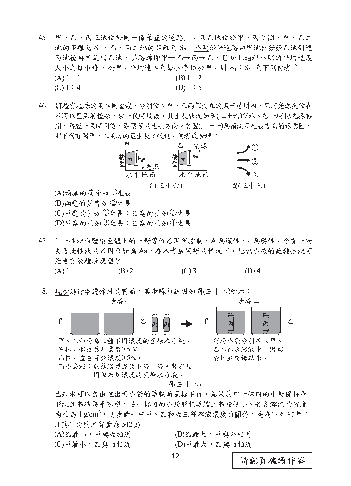

第 1 題對應：八上1-2
小瑩想以量筒量取30.0mL的溶液，圖(一)虛線箭頭所指的位置為量筒中目前已量取的溶液體積。小瑩使用下列哪一種器材裝取溶液後，再加入量筒內，最能避免體積超出30.0mL？

此題選項為圖形，請參閱下方官方題本頁面圖片作答。
正解 (A) 當液面已接近目標刻度時，必須改用能「少量、逐滴」加入液體的器材(如滴管)，才能精細控制加入量而不致超過刻度；燒杯、量杯等大口徑器材一次傾倒的量太多，容易超出。
第 3 題對應：九上6-2
某次地震發生後，測站甲、乙、丙、丁測得的震度如表(一)所示。已知測站與震央距離的大小關係為丁＞丙＞乙＞甲，若將此次地震的震央位置以★表示，甲、乙、丙、丁代表其測站位置，下列有關此次地震的震度分布及測站的位置圖，何者最合理？
此題選項為圖形，請參閱下方官方題本頁面圖片作答。
正解 (D) 同一次地震中，測站離震央愈遠，所受的搖晃愈小、震度愈低。故正確的位置圖必須同時滿足：距離由近而遠為甲→乙→丙→丁，且對應的震度由大而小遞減，需比對表(一)的震度數值選出相符者。
第 8 題對應：八上1-1
瑋婷觀察爸爸在家中利用茶壺煮水時，茶壺內水量的多少似乎會影響水煮沸所需的時間，她假設當茶壺內水量越多，將水煮沸所需的時間也越多。若要驗證她的假設是否合理，下列哪一種實驗設計可直接用來驗證她的假設？
此題選項為圖形，請參閱下方官方題本頁面圖片作答。
正解 (A) 驗證此假設須採單一變因原則：只改變「水量」(操作變因)，其餘條件如加熱火力、容器、初始水溫等皆須維持相同(控制變因)，再比較各組水煮沸所需的時間(應變變因)。
第 14 題對應：八下5-3
下列為某網頁上的一則問與答：「問：煮蟹肉棒時，外包裝的塑膠套是否需要拆掉？答：市售蟹肉棒外包裝的塑膠套，其材質多屬於熱塑性聚合物，不建議長時間置於高溫環境下烹煮，建議料理前拆掉塑膠套是最保險的做法。」根據上述，下列關於外包裝塑膠套材質的性質敘述和結構示意圖，何者正確？

此題選項為圖形，請參閱下方官方題本頁面圖片作答。
正解 (A) 熱塑性聚合物的分子多呈「鏈狀」排列，鏈與鏈之間並未以化學鍵大量交聯，因此受熱後容易軟化變形、冷卻後又變硬，可反覆加熱塑型；熱固性聚合物則呈網狀交聯結構，受熱不會軟化。應選出同時符合「受熱軟化」與「鏈狀結構」的選項。
第 17 題對應：九下2-1
若將兩根相同的條形磁鐵靜止擺放如圖(九)所示，則圖中虛線區域中磁力線分布及磁場方向，下列何者最合理？
此題選項為圖形，請參閱下方官方題本頁面圖片作答。
正解 (A) 磁力線在磁鐵外部一律由N極出發、回到S極，且磁力線彼此不相交。若相鄰的是異極(N對S)，磁力線會由一根磁鐵的N極直接connect到另一根的S極；若是同極相對，磁力線則會互相排斥而向外彎曲，需依圖中兩磁鐵的極性選出正確者。
第 20 題對應：八下6-4
有一個以密度為2.5g/cm³的材質製成之容器甲，將其置入另一盛水容器中，容器甲會浮在水面上，如圖(十二)所示。若用手扶住容器甲，並在容器甲內倒滿水，釋放之，待靜止平衡後，容器甲的浮沉情形最可能為下列何者？
此題選項為圖形，請參閱下方官方題本頁面圖片作答。
正解 (D) 容器材質密度(2.5g/cm³)大於水，原本能浮起是因為內部空心、含有空氣使整體平均密度小於水。倒滿水後，原本空氣的部分被水取代，整體平均密度必定大於水的密度，容器因而下沉至底部。
第 27 題對應：九上6-3
大瀚在整理野外記錄的地質資料，圖(十九)是根據資料用鉛筆初步繪製但尚未完成的地層剖面示意圖。此外，資料上還記載著該地層同時存在斷層與岩脈，且由斷層與岩脈的關係可知剖面中的岩脈是在斷層活動之後才形成。若岩脈以灰色表示，斷層以粗黑實線表示，則完成後的示意圖最接近下列何者？
此題選項為圖形，請參閱下方官方題本頁面圖片作答。
正解 (D) 依交切定律，後形成的地質構造會截切先形成者。岩脈既然形成於斷層活動之後，岩脈就會貫穿並「切斷」斷層線(斷層在岩脈處被中斷)，而不是被斷層錯開，需選出符合此切割關係的示意圖。
第 46 題對應：生物4-2
將種有植株的兩相同盆栽，分別放在甲、乙兩個獨立的黑暗房間內，且將光源擺放在不同位置照射植株，經一段時間後，其生長狀況如圖(三十六)所示。若此時把光源移開，再經一段時間後，觀察莖的生長方向。若圖(三十七)為預測莖生長方向的示意圖，則下列有關甲、乙兩處的莖生長之敘述，何者最合理？

此題選項為圖形，請參閱下方官方題本頁面圖片作答。
正解 (A) 植物的莖同時具有背地性(向上生長)與向光性。當光源移除後，向光性的刺激消失，此時主導生長方向的只剩重力，故兩盆栽的莖都會恢復為背離地心、向上生長。